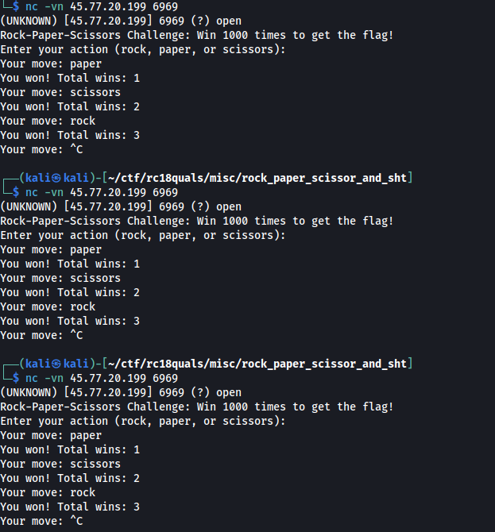
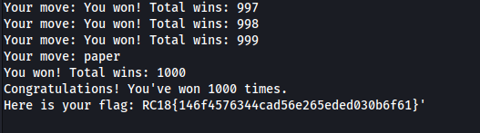

[Misc] Rock Paper Scissors Sh**t
We’re given an IP and a port to connect to - 45.77.20.199:6969

We tried connecting to it and it’s a rock paper scissor game. We tried poking around with it and we discovered that each iteration, the winning sequence is the same. We built a python code to interface with the input and output. The idea is as follows:
- Send the known correct winning sequence. It will stop on an iteration number where no known winning move is reached.
- Set the current iteration number.
- Send input: rock, paper, and scissors. If the input is losing, return to step 1 to try the next input until a winning move is accepted.
- Save the current iteration number along the winning input adding it to the known winning sequence.
- Repeat until step 1000
The following code is used to do this automatically:
from pwn import *
import json
winning_sequence = {
0 : b"paper",
1 : b"scissors",
2 : b"rock",
3 : b"paper"
}
def guess_winning_move(curr_round):
choices = [b"rock", b"paper", b"scissors"]
for c in choices:
r = remote('45.77.20.199', 6969)
x = list([ v for k,v in winning_sequence.items()])
r.sendline(b"\n".join(x))
for j in range(len(x)+1):
print(r.recvuntil(b"move: "))
print("Sending {}...".format(c))
r.sendline(c)
res = r.recvuntil(b"move: ")
print(res)
if b"You won!" in res:
print("{} is winning on round {}".format(str(c), curr_round+1))
r.close()
return (curr_round, c)
r.close()
def save_winning_sequence():
with open("winning_sequence.txt", "w") as wf:
wf.write(str(winning_sequence))
wins = 0
for i in range (4,1001):
print("Guess winning move of rnd {}...".format(i+1))
curr_round, winning_move = guess_winning_move(i)
winning_sequence[curr_round] = winning_move
print(str(winning_sequence))
save_winning_sequence()
We found the sequence and therefore the flag:
